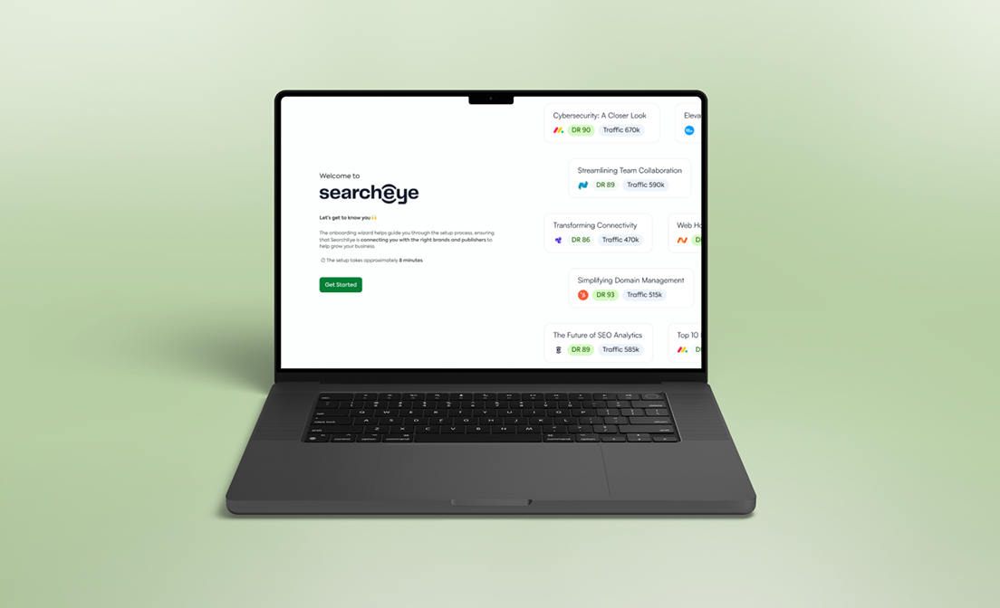

Transforming a Manual Workflow into a Scalable Collaborative Platform
SearchEye’s core workflow relied heavily on internal teams to manually coordinate between brands and publishers. While functional, this approach created operational bottlenecks, slowed down execution, and limited the platform’s ability to scale. I led the redesign of the end-to-end workflow to shift the product from a service-driven model into a collaborative, self-serve platform, enabling brands and publishers to interact directly within the system while repositioning internal teams as support rather than intermediaries.
View live site
The problem
SearchEye was trying to become a product-led platform, but was still running like a PR agency. Every interaction between brands and publishers went through the internal team.
Key challenges
Communication between brands and publishers was handled manually. Workflows were spread across tools — email, Slack, spreadsheets. Users had little visibility into progress or status. Internal teams became bottlenecks for execution and project management.
Why it matters
This workflow created systemic inefficiencies: slower campaign execution, high operational overhead, limited scalability (growth depended on team capacity), and reduced user autonomy and engagement.
To grow sustainably, the product needed to evolve from a service model to a scalable SaaS platform.
Reframing the problem
The system didn’t have a collaboration problem. It had an ownership problem. Users couldn’t act without the internal team. The platform needed to give brands and publishers the tools to work directly with each other.
Understanding the existing system
Before redesigning, I mapped the full workflow across all stakeholders: brands (requesting campaigns), publishers (fulfilling requests), and the internal team (facilitating and coordinating).
I partnered directly with the CEO, product, and operations to align on the new product direction and prioritise which workflows to tackle first.
Key design decisions
I introduced structured interactions between brands and publishers within the platform, removing the internal team as a middleman and cutting campaign turnaround time significantly.
Centralising the workflow
I designed a unified workflow system where requests, responses, and updates live in one place. Users can track progress without external tools.
Role-based experiences
Different interfaces were designed for brands (campaign creation and management) and publishers (opportunity discovery and response). This ensured each user type had clarity and control over their responsibilities.
Establishing the design system and SOP
Alongside the product redesign, I established SearchEye’s design SOP, standardising workflows across the team. This reduced design inconsistencies by 30% and improved onboarding speed for new hires joining the product team.
Outcome & impact
The redesigned platform shifted SearchEye from a service-dependent model to a self-serve SaaS product.
- Publisher fulfilment rates increased by 30%.
- User engagement across dashboards improved by 25%.
- Order management time dropped by 40%.
The internal ops team moved from primary facilitator to a support role, unlocking the company’s ability to scale without adding headcount.
Interested in working together?
Shoot me an email if you’d like to chat.
Got a project? Say Hello!
shaznayluna@gmail.comI’m always up for good conversations about product design, complex problems, or new opportunities. Don’t be a stranger.